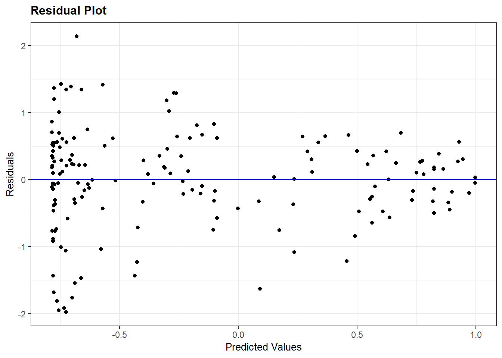

#specifieke packages voor testen assumpties
library(car) #meerdere assumptie testen
library(ggResidpanel) #assumpties testen met grafieken
library(expss) #frequentietabellen maken
#algemene packages
library(rio) #laden van data
library(tidyverse) #data manipulatie en grafieken
library(broom) #data voor residuals en influential cases7 OLS Assumpties
In dit hoofdstuk ligt de focus op het testen van de assumpties van OLS regressie. Deze 6 assumpties worden getest:
- Onafhankelijke fouten (autocorrelatie)
- Beperkte multicollineariteit
- Lineariteit en additiviteit
- Homoskedasticiteit
- Normaal verdeelde errors (residuals)
- Beperkte impact ‘outliers’ en ‘influential cases’
We beginnen met het laden van relevante R packages. Deze packages zijn reeds geïnstalleerd op de universitaire computers, maar moeten eerst geladen worden.
Waarschuwing!
Het is belangrijk te vermelden dat 2 packages die we hier gebruiken voor het testen van assumpties niet altijd compatibel zijn met het dplyr package (uit tidyverse): car en expss. Deze 2 packages hebben namelijk ook een recode functie die een verschillende syntax gebruikt dan dezelfde functie in dplyr. Als je de recode syntax van dplyr gebruikt (onze standaard) na het laden van car of expss kun je een foutmelding krijgen. Er zijn 3 manieren om hier mee om te gaan:
We laden
carenexpssvooraleer wetidyverseladen om ervoor te zorgen dat derecodefunctie vandplyrgeïnstalleerd wordt als de finale versie. Dit is wat we doen in de R code hierboven;Wanneer je gebruik maakt van
recode, kun je het specifieke package voor de functie ook aanduiden in de syntax. In plaats van gewoonrecodete schrijven, schrijf je dandplyr::recode.Je kunt
carenexpssook ontkoppelen nadat je ze gebruikt hebt om specifieke assumpties te testen met dedetachfunctie. De R code hieronder toont hoe je dit kan doen. Hier wordt er een hashtag voor de syntax geplaatst zodat de code niet echt wordt gebruikt, gezien we de packages verder nog gebruiken in dit overzicht.
# detach("package:car")
# detach("package:expss")7.1 Onafhankelijke fouten en de Durbin-Watson test
De assumptie van onafhankelijke fouten is gerelateerd aan de voorwaarde dat observaties onafhankelijk van elkaar geselecteerd moeten zijn. Aan deze voorwaarde is niet voldaan als er een tijdsrelatie is tussen de observaties of als er sprake is van geografische clustering (bv. gebruik van multistage sampling voor een survey).
De Durbin-Watson test kan gebruikt worden om na te gaan of een tijdsrelatie leidt tot een te sterke correlatie tussen de fouten (errors/residuals). De test kan niet gebruikt worden als er geen tijdsrelatie is (bv. een cross-sectionele survey). Bovendien moet de dataset geordend zijn volgens tijd: van oud naar nieuw of van nieuw naar oud.
De voorbeelddataset “gdp-dem, time order.csv” voldoet aan deze voorwaarden. Het bevat het BBP (“gdp”) en de democratiescore (“democracy”) voor een enkel land over de jaren heen. De dataset is fictief. Er is geen missing data, maar de syntax kan ook gebruikt worden indien er ontbrekende waarden zijn (‘NA’).
dta <- import("gdp-dem, time order.csv")
head(dta, n = 10L) #Zodat we enkel 10 eerste rijen zien year gdp democracy
1 1990 8400 50
2 1991 8500 55
3 1992 8800 60
4 1993 8700 60
5 1994 8600 60
6 1995 8800 65
7 1996 9200 65
8 1997 9300 65
9 1998 9500 70
10 1999 9700 70Indien de dataset niet gesorteerd is, kun je dit zelf doen met behulp van de arrange functie uit het dplyr package (onderdeel van tidyverse).
#sorteer oud-nieuw
dta <- dta |>
arrange(year)
#sort nieuw-oud
dta <- dta |>
arrange(desc(year))dta <- dta-
Met deze code verduidelijken we dat we willen dat de nieuwe, gesorteerde dataset, de oude overschrijft. We zouden ook een nieuwe dataset kunnen creëren zonder de oude te vervangen, maar dat is meestal niet nodig.
arrange(year)-
Met deze functie sorteren (‘arrange’) we de dataset volgens de waarden van de variabele tussen haakjes. Op deze manier wordt gesorteerd van lage (oud) naar hogere waarden (nieuw). We kunnen op meerdere variabelen sorteren door deze tussen haakjes toe te voegen, gescheiden van elkaar door een komma.
arrange(desc(year))-
Met deze syntax laten we de dataset sorteren van hoge (nieuw) naar lage (oud) waarden (“descending”).
We voeren een bivariate regressieanalyse uit met gdp als onafhankelijke variabele en democratie als afhankelijke variabele:
time_model <- lm(democracy ~ gdp, data = dta)
tidy(time_model)# A tibble: 2 × 5
term estimate std.error statistic p.value
<chr> <dbl> <dbl> <dbl> <dbl>
1 (Intercept) -36.2 13.9 -2.61 0.0143
2 gdp 0.0111 0.00148 7.50 0.0000000291Dan gebruiken we de Durbin-Watson uit het car package.
durbinWatsonTest(time_model) lag Autocorrelation D-W Statistic p-value
1 0.5124721 0.8369625 0
Alternative hypothesis: rho != 0durbinWatsonTest(modelname)-
We voeren de Durbin-Watson test uit op het model tussen haakjes.
Output uitleg
- Autocorrelation: Mate van correlatie tussen de fouten (errors of residuals)
- D-W Statistic: De Durbin-Watson statistiek. Waarden lager dan 1 en hoger dan 3 wijzen op te hoge autocorrelatie
- p-waarde: p-waarde voor de nulhypothese dat de autocorrelatie niet significant van 0 verschilt, de alternatieve hypothese is dat die wel verschilt.
De D-W statistiek voor dit model is 0.84. Dit wijst op een probleem met autocorrelatie.
7.2 Beperkte multicollineariteit
Voor de andere assumptietests maken we gebruik van data zonder autocorrelatie. We gebruiken onze landendataset (demadata.rds) en schatten een meervoudig regressiemodel waarbij V-Dem polyarchy scores (v2x_polyarchy) voorspeld worden op basis van economische ongelijkheid (gini_2019), regime in het verleden (TYPEDEMO1984: democratie of autocratie in 1984, naar een factor variabele getransformeerd) en BBP in 2006 (GDP2006).
#data laden
demdata <- import("demdata.rds") |>
as_tibble()
#Factor maken van binaire variabele
demdata <- demdata |>
mutate(TYPEDEMO1984 = factorize(TYPEDEMO1984))
#Meervoudig model schatten en resultaten bekijken
model_multiple <- lm(v2x_polyarchy ~ gini_2019 + TYPEDEMO1984 + GDP2006, data = demdata)
summary(model_multiple)# A tibble: 4 × 7
term estimate std.error statistic p.value conf.low conf.high
<chr> <dbl> <dbl> <dbl> <dbl> <dbl> <dbl>
1 (Intercept) 6.78e-1 2.02e-1 3.36 0.00153 2.72e-1 1.08
2 gini_2019 -4.99e-3 4.98e-3 -1.00 0.322 -1.50e-2 0.00502
3 TYPEDEMO1984Democraci… 7.00e-2 5.95e-2 1.18 0.246 -4.97e-2 0.190
4 GDP2006 8.58e-6 2.70e-6 3.17 0.00261 3.14e-6 0.0000140De coëfficienten voor gini_2019 (p = 0.322) en TYPEDEMO1984 (p = 0.246) zijn niet significant. Om te kijken of er sprake is van te hoge multicollineariteit gebruiken we opnieuw het car package, nu voor de vif() functie.
vif(model_multiple) gini_2019 TYPEDEMO1984 GDP2006
1.811074 1.171946 2.039059 vif(multiple)-
We gebruiken de vif functie op het model tussen haakjes
De output geeft de VIF statistieken voor elke onafhankelijke variabele. Geen van de waarden is hoger dan 5 dus is er geen sprake van te hoge multicollineariteit.
Waarschuwing!
Indien je een factor variabele opneemt met 3 of meer oorspronkelijke categorieën (bv. meerdere regio’s, onderwijsniveaus) dan krijg je licht andere output:
demdata <- demdata |>
mutate(Typeregime2006 = factorize(Typeregime2006))
vif_example <- lm(v2x_polyarchy ~ gini_2019 + GDP2006 + Typeregime2006, data = demdata)
vif(vif_example) GVIF Df GVIF^(1/(2*Df))
gini_2019 1.385354 1 1.177011
GDP2006 1.448928 1 1.203714
Typeregime2006 1.346530 2 1.077219vif() geeft nu een GVIF en GVIF^(1/(2*DF)). Dit zijn aanpassingen gezien categorische variabelen meerdere coëfficiënten hebben en dus vrijheidsgraden. We evalueren multicollineariteit door GVIF^(1/(2*DF)) te kwadrateren en we gebruiken dezelfde vuistregels als bij de gewone VIF. In principe kunnen we ook kijken of GVIF^(1/(2*DF)) op zich hoger is dan 2.23 (gezien 2.23²= 5).
7.3 Lineariteit en additiviteit
Een lineair regressiemodel berust op de assumptie dat er een lineaire relatie is tussen de predictoren en de afhankelijke variabele. Om te onderzoeken of de assumptie niet geschonden is maken we gebruik van plots, aangemaakt via het ggResidpanel package.
We gaan hier eerst de assumptie na voor een simpel model waarbij electorale democratie (v2x_polyarchy) voorspeld wordt door ongelijkheid (gini_2019).
bivar_model <- lm(v2x_polyarchy ~ gini_2019, data=demdata)
resid_panel(bivar_model, plots = c("resid"))resid_panel(bivar_model,-
We voeren de functie resid_panel uit op het model tussen haakjes.
plots = c("resid"))-
De functie kan gebruikt worden voor meerdere soorten plots. Hier verduidelijken we dat we het plot van residuals tegen voorspelde waarden willen (“resid”).
Op het plot zien we geen duidelijk patroon in de data, over het algemeen gewoon een puntenwolk. Het ontbreken van een patroon duidt erop dat de relatie tussen ongelijkheid en democratiescores als lineair kan beschouwd worden.
Wanneer je een ordinale variabele gebruikt als predictor in plaats van een echt continue variabele, dan ziet het plot er anders uit (i.e. neerwaarts gaande lijnen van residuals).
7.3.1 Logaritmische functies
We krijgen niet altijd gewoon een puntenwolk zonder patroon te zien. Laten we het plot bekijken voor ons complexer model voor democratiescores (model_multiple).
resid_panel(model_multiple, plots = c("resid"))In het plot zien we een lijnpatroon bij hogere waarden op de x-as. We kunnen onderzoeken welke onafhankelijke variabele dit patroon veroorzaakt door te kijken naar de partiële regressieplots via de avPlots() functie uit het car package.
avPlots(model_multiple)
avPlots(model_multiple)-
We vragen R om de partiële regressieplots voor het model tussen haakjes.
Deze partiële regressieplots (“added-variable plot”) tonen de relatie tussen de predictor en de afhankelijke variabele gecontroleerd voor de andere predictoren in het model.
Voor de onafhankelijke variabele gini_2019, vinden we een relatief vlakke lijn (de coëfficiënt was ook niet significant). De residuals zijn vrij gelijk verspreid onder en boven de lijn dus er lijkt geen afwijking van lineariteit te zijn.
Voor de TYPEDEMO1984 factor bekijken we het plot niet gezien we slechts twee waarden voor deze variabele hebben.
Als we de onafhankelijke variabele GDP2006 bekijken vinden we een positief hellende regressielijn (de coëfficiënt was ook significant), maar de punten zijn niet gelijk verspreid rond de lijn. Het lijkt hier eerder dat de relatie een degressieve curve volgt dan een rechte lijn.
Om hiervoor te compenseren voeren we een logaritmische transformatie uit op GDP2006.
demdata <- demdata |>
mutate(LNGDP2006 = log(GDP2006))Deze nieuwe gelogde versie van de variabele wordt vervolgens gebruikt in de regressie in de plaats van de originele variabele. We zouden dan het residual plot en de partiële regressieplots opnieuw kunnen inspecteren.
#Opnieuw schatten model
multiple_ln <- lm(v2x_polyarchy ~ gini_2019 + TYPEDEMO1984 + LNGDP2006,
data=demdata)
#Residual Plot
resid_panel(multiple_ln, plots = c("resid"))#Partiële regressieplots
avPlots(multiple_ln)
7.3.2 Kwadratische functies
Een andere niet-lineaire relatie die we kunnen tegenkomen is de kwadratische of curvilineaire relatie. Bij wijze van voorbeeld hier inspireren we ons op de ‘meer geweld in het midden’-these, namelijk het idee dat landen met hybride regimes (gemiddelde democratiescores) meer geweld en instabiliteit ervaren dan zowel autoritaire systemen (lage democratiescores) als democratische systemen (hoge democratiescores).
De variabele voor politiek geweld en instabiliteit is hier pve en is gebaseerd of de 2021 World Governance Indicators. Hogere waarden staan voor minder geweld en instabiliteit. Hier gebruiken we electorale democratie (v2x_polyarchy) als onafhankelijke variabele.
We inspecteren hier eerst de empirische, bivariate relatie met behulp van een scatterplot.
ggplot(demdata, aes(x = v2x_polyarchy, y = pve)) +
geom_point() +
geom_smooth(method = "loess") +
labs(title = "Politiek geweld en democratie",
x = "Electorale democratie (2020)",
y = "Afwezigheid van politiek geweld en instabiliteit (2021)")De syntax lijkt sterk op wat we eerder gezien hebben (Section 1.2), met 1 belangrijk verschil:
geom_smooth(method = "loess")-
Hier vragen we R om een lijn te tekenen om de relatie tussen de 2 variabelen te vatten. We vragen hier niet om een rechte lijn (method=“lm”), maar een ‘locally estimated scatterplot smoothing’ (loess) lijn (method = “loess”). Deze lijn volgt de data zo nauwgezet mogelijk om de relatie tussen de variabelen weer te geven. De loess methode is de standaard (default) methode om de lijn te tekenen. We zouden dus ook gewoon
geom_smooth()kunnen schrijven om dezelfde uitkomst te verkrijgen.
Zoals we kunnen zien als we naar het scatterplot kijken is er enige steun voor een curvilineaire relatie. We schatten nu eerst een lineair regressiemodel:
#schat het model
Violence_linmodel <- lm(pve ~ v2x_polyarchy, data = demdata)
#bekijk resultaten
tidy(Violence_linmodel, conf.int = TRUE)# A tibble: 2 × 7
term estimate std.error statistic p.value conf.low conf.high
<chr> <dbl> <dbl> <dbl> <dbl> <dbl> <dbl>
1 (Intercept) -1.34 0.135 -9.90 2.36e-18 -1.60 -1.07
2 v2x_polyarchy 2.19 0.233 9.38 5.75e-17 1.73 2.65De niet-lineaire relatie kun je soms zien uit het residuals plot, in de vorm van een gebogen patroon, maar dit is visueel minder zichtbaar hier:
resid_panel(Violence_linmodel, plots = c("resid"))Om te onderzoeken of de relatie beter als kwadratisch wordt gevat voegen we een kwadratische term toe aan het model. We maken deze variabele eerst aan en voegen die dan toe aan het model, samen met de originele variabele.
#gewadrateerde variabele maken
demdata <- demdata |>
mutate(v2x_polyarchy_sq = v2x_polyarchy^2)
#nieuw model schatten
Violence_sqmodel <- lm(pve ~ v2x_polyarchy + v2x_polyarchy_sq,
data=demdata)
tidy(Violence_sqmodel, conf.int = TRUE)# A tibble: 3 × 7
term estimate std.error statistic p.value conf.low conf.high
<chr> <dbl> <dbl> <dbl> <dbl> <dbl> <dbl>
1 (Intercept) -0.589 0.243 -2.42 0.0165 -1.07 -0.109
2 v2x_polyarchy -1.73 1.10 -1.58 0.117 -3.90 0.438
3 v2x_polyarchy_sq 3.83 1.05 3.64 0.000361 1.75 5.90 We vinden hier dat de kwadratische variabele significant is (p < 0.001) en dus dat de relatie tussen v2x_polyarchy en pve beter als curvilineair dan lineair te beschrijven is.
We kunnen dan het residuals plot opnieuw inspecteren (zie onder).
7.4 Homoskedasticiteit
Om te onderzoeken of de assumptie van homoskedasticiteit geschonden is maken we opnieuw gebruik van het residuals plot (scatterplot van voorspelde waarden en residuals). Hier vinden we bijvoorbeeld heteroskedasticiteit voor het kwadratische model (Violence_sqmodel):
resid_panel(Violence_sqmodel, plots = c("resid"))
Opnieuw zien we liever een wolk van toevallig verspreide punten (homoskedasticiteit) eerder daan een trechter-vorm (heteroskedasticiteit). De trechter-vorm in het plot wijst erop dat de assumptie geschonden is.
7.5 Normaal verdeelde errors
We onderzoeken of de assumptie van normaal verdeelde errors is geschonden met behulp van 2 mogelijke plots uit het ggResidpanel package: een histogram van de fouten en een kwartielplot (qq-plot) van de fouten.
Hier gaan we na of de assumptie geschonden is voor ons meervoudig regressiemodel met gelogde GDP predictor (multiple_ln):
resid_panel(multiple_ln, plots = c("hist", "qq"))plots = c("hist", "qq"))-
Hier vragen we om het histogram (“hist”) samen met het qq-plot (“qq”).
We zouden ook het residuals plot (“resid”) kunnen toevoegen indien we meerdere assumpties vlug samen willen testen:
resid_panel(multiple_ln, plots = c("resid", "hist", "qq"))7.6 Beperkte impact outliers en influential cases
We gebruiken de augment() functie uit het broom package op de meervoudig regressie met gelogde GDP predictor (multiple_ln). De statistieken worden in een nieuwe dataset opgeslagen in onderstaande code.
#augment gebruiken en resultaten opslaan in nieuw object
demdata_multln <- augment(multiple_ln)demdata_multln <-augment(multiple_ln)-
We gebruiken de augment functie op het model tussen haakjes en slaan de resultaten op in een nieuw data object (
demdata_multln).
De gegevens in het dataobject zien er als volgt uit:
demdata_multln# A tibble: 53 × 11
.rownames v2x_polyarchy gini_2019 TYPEDEMO1984 LNGDP2006 .fitted .resid
<chr> <dbl> <dbl> <fct> <dbl> <dbl> <dbl>
1 3 0.908 26.5 Democracies 10.3 0.857 0.0514
2 4 0.894 30.1 Democracies 10.5 0.881 0.0129
3 10 0.485 37.5 Autocracies 7.38 0.480 0.00510
4 13 0.652 48 Democracies 7.75 0.559 0.0925
5 14 0.632 29.3 Autocracies 8.62 0.625 0.00694
6 15 0.678 47.6 Democracies 8.31 0.632 0.0464
7 16 0.807 38.7 Democracies 10.5 0.906 -0.0995
8 17 0.882 32.1 Democracies 9.32 0.733 0.149
9 18 0.577 37.3 Democracies 7.68 0.530 0.0466
10 20 0.327 40.7 Democracies 6.99 0.447 -0.120
# ℹ 43 more rows
# ℹ 4 more variables: .hat <dbl>, .sigma <dbl>, .cooksd <dbl>, .std.resid <dbl>
Output uitleg
augment() creëert een dataframe met alle observaties die gebruikt zijn om het model te schatten. Je vindt de volgende kolommen terug:
.rownames: Di is het rijnummer van de observatie zoals je die vindt in de originele dataset (zonder eventuele missing waarden)v2x_polyarchytot en metLNGDP2006: Dit zijn de variabelen gebruikt in het model met de waarden die elke observatie ervoor heeft..fitted: De voorspelde (‘fitted’) waarden op basis van de schattingen in het model.resid: De residuals (fouten/errors) voor elke observatie, waarbij Residual = Observed - Fitted/Predicted. Hier: Residual =v2x_polyarchy-.fitted.hat: Diagonaal van de hat matrix (te negeren)..sigma:Geschatte standaardafwijking van de fouten als de observatie uit het model zou worden verwijderd (te negeren).cooksd: De Cook’s D waarde voor de observatie. Zie onder..std.resid: Niet getoond in de output hierboven maar aanwezig in de dataset. Deze kolom bevat de gestandaardiseerde residuals van het model. Zie onder.
We gebruiken de gestandaardiseerde residuals (.std.resid) om eerst outliers te onderzoeken. Vervolgens gebruiken we de Cook’s D waarden (.cooksd) om influential cases te onderzoeken.
7.6.1 Outliers analyseren
Om te beginnen bekijken we de descriptieve statistieken voor de gestandaardiseerde residuals (opgeslagen in het data object demdata_multln) . We kijken specifiek naar de minimum en maximum waarden als eerste check voor outliers. We bekijken in het bijzonder of gestandaardiseerde residuals hoger zijn dan de drempelwaarden van (|1.96|, |2.54|, en zeker |3.29|).
summary(demdata_multln$.std.resid) Min. 1st Qu. Median Mean 3rd Qu. Max.
-3.1281471 -0.2252984 0.2109869 -0.0007828 0.5831831 1.7394397 We vinden waarden die zorgwekkend kunnen zijn. Zo is er al zeker 1 observatie waarvan de gestandaardiseerde residual een absolute waarde hoger dan 2.58 heeft (aangezien het minimum -3.128 is). Maar we moeten nog nagaan hoeveel observaties precies de drempelwaarden overschrijden.
We doen dit door 3 dummy variabelen aan te maken in onze dataset: SRE1.96, SRE2.58, SRE3.29. Deze dummy variabelen nemen de waarde ‘1’ aan als de gestandaardiseerde residual van een observatie hoger is dan de drempelwaarde in de naam van de variabele. Als de waarde van de gestandaardiseerde residual lager is, neemt de dummy de waarde ‘0’ aan. We gebruiken hier de case when functie (uit dplyr) voor de hercodering. Zie Statistiek I, 5.1
Onderstaande code kun je grotendeels onaangepast laten in je eigen voorbeelden, enkel de naam van de dataset (hier: demdata_multln) moet aangepast worden voor eigen toepassingen.
demdata_multln <- demdata_multln |>
mutate(SRE1.96 = case_when(
.std.resid > 1.96 | .std.resid < -1.96 ~ 1,
.std.resid > -1.96 & .std.resid < 1.96 ~ 0),
SRE2.58 = case_when(
.std.resid > 2.58 | .std.resid < -2.58 ~ 1,
.std.resid > -2.58 & .std.resid < 2.58 ~ 0),
SRE3.29 = case_when(
.std.resid > 3.29 | .std.resid < -3.29 ~ 1,
.std.resid > -3.29 & .std.resid < 3.29 ~ 0
))demdata_multln <- demdata_multln |>-
De nieuwe variabelen maken gebruik van de demdata_multln dataset (voor de .std.resid variabele), en worden ook zelf opgeslagen in deze dataset.
mutate(SRE1.96 = case_when(-
We creëren hier de nieuwe variabele SRE1.96. De waarden worden bepaald door de
case_whenfunctie. .std.resid > 1.96 | .std.resid < -1.96 ~ 1,-
Hier duiden we aan dat wanneer gestandaardiseerde residuals groter dan 1.96 of (de streep ‘|’ staat symbool voor ‘of’ ) lager dan -1.96 zijn, de SRE1.96 variabele de waarde 1 aanneemt (~). Let erop dat de variabele .std.resid twee keer geschreven moet worden.
.std.resid > -1.96 & .std.resid < 1.96 ~ 0),-
Hier duiden we aan dat wanneer gestandaardiseerde residuals groter dan -1.96 en (de ‘&’ staat hier voor ‘en’) lager dan 1.96 zijn, de SRE1.96 variabele de waarde 0 aanneemt (~).
Nu we de dummies aangemaakt hebben kunnen we frequentietabellen voor elk van hen bekijken. We maken gebruik van de fre() functie uit het expss package.
De code hieronder kun je wederom grotendeels gebruiken voor eigen voorbeelden; enkel de naam van de dataset (hier: demdata_multln) dient veranderd te worden voor eigen toepassingen.
fre(demdata_multln$SRE1.96)| demdata_multln$SRE1.96 | Count | Valid percent | Percent | Responses, % | Cumulative responses, % |
|---|---|---|---|---|---|
| 0 | 49 | 92.5 | 92.5 | 92.5 | 92.5 |
| 1 | 4 | 7.5 | 7.5 | 7.5 | 100.0 |
| #Total | 53 | 100 | 100 | 100 | |
| <NA> | 0 | 0.0 |
fre(demdata_multln$SRE2.58)| demdata_multln$SRE2.58 | Count | Valid percent | Percent | Responses, % | Cumulative responses, % |
|---|---|---|---|---|---|
| 0 | 51 | 96.2 | 96.2 | 96.2 | 96.2 |
| 1 | 2 | 3.8 | 3.8 | 3.8 | 100.0 |
| #Total | 53 | 100 | 100 | 100 | |
| <NA> | 0 | 0.0 |
fre(demdata_multln$SRE3.29)| demdata_multln$SRE3.29 | Count | Valid percent | Percent | Responses, % | Cumulative responses, % |
|---|---|---|---|---|---|
| 0 | 53 | 100 | 100 | 100 | 100 |
| #Total | 53 | 100 | 100 | 100 | |
| <NA> | 0 | 0 |
We vinden hier dat meer dan 5% van de observaties een gestandaardiseerde residual heeft met een absolute waarde hoger dan 1.96, meer dan 1% heeft een gestandaardiseerde residual met een absolute waarde hoger dan 2.58. Er is geen enkele observatie met een absolute waarde hoger dan 3.29 (dit konden we reeds aflezen uit de descriptieve statistieken).
Om te onderzoeken of de outliers ook een invloed hebben op de resultaten van het model vergelijken we de resultaten van ons model met die van een nieuw model zonder outliers. Hier doen we dit voor outliers met gestandaardiseerde residuals met absolute waarde hoger dan 1.96. De SRE1.96 variabele kan vervangen worden met de SRE2.58 en SRE3.29 variabelen om alternatieve manieren om outliers uit te sluiten te onderzoeken.
multiple_ln1.96 <- lm(v2x_polyarchy ~ gini_2019 + TYPEDEMO1984 + LNGDP2006,
data = subset(demdata_multln, SRE1.96 == 0))data = subset(demdata_multln, SRE1.96 == 0))-
Met deze code gebruiken we de demdata_multln dataset gecreëerd met augment, maar we behouden enkel observaties die voor de variabele SRE1.96 de waarde 0 hebben.
Als we de modellen met en zonder outliers vergelijken gaan we na of de coëfficiënten en hun significantie substantieel veranderd zijn. Let wel, outliers kunnen niet zomaar verwijderd worden om om de model fit te verbeteren. Er moet een gemotiveerde, theoretische reden zijn voor uitsluiting van observaties.
7.6.2 Influential cases analyseren
Om influential cases te onderzoeken gaan we na of er observaties zijn in de dataset met hoge Cook’s D waarden:
waarden hoger dan 1 zijn over het algemeen zorgwekkend;
waarden hoger dan 0.5 moeten nader bestudeerd worden en kunnen een risico vormen;
waarden die veel hoger zijn dan de andere Cook’s D waarden behoeven ook verdere aandacht.
We bekijken eerst de overzichtsstatistieken voor de Cook’s D waarden.
summary(demdata_multln$.cooksd) Min. 1st Qu. Median Mean 3rd Qu. Max.
0.0000036 0.0007700 0.0035030 0.0292621 0.0162039 0.6608136 Het overzicht toont dat er minstens 1 observatie is met een hoge Cook’s D waarde. De maximum waarde is 0.66 en deze waarde is substantieel hoger dan de andere waarden. De waarde voor het 3de kwartiel is slechts 0.016, wat betekent dat 75% van de observaties een waarde lager hebben dan 0.016.
We kunnen ook een visualisatie maken van de Cook’s D waarden met het ggResidpanel package:
resid_panel(multiple_ln, plots = c("cookd"))plots = c("cookd"))-
We vragen hier om een plot met Cook’s D waarden op de y-as. Het rijnummer van de observatie in de dataset komt op de x-as.
De grafiek toont dat er slechts 1 case is om ons zorgen over te maken. Dit is de case met de maximum waarde van 0.66.
We kunnen deze case verwijderen uit het model om na te gaan of de resultaten beïnvloed worden:
multiple_lncook <- lm(v2x_polyarchy ~ gini_2019 + TYPEDEMO1984 + LNGDP2006,
data = subset(demdata_multln, .cooksd < 0.65))data = subset(demdata_multln, .cooksd < 0.65))-
We gebruiken de demdata_multln dataset maar vragen om een subset van de data met enkel die observaties met een waarde lager dan 0.65 voor .cooksd. We kiezen deze waarde hier omdat de case die we willen uitsluiten een waarde van 0.66 heeft. In principe hadden we ook 0.66 zelf, 0.64 enz. kunnen kiezen, zolang het een grenswaarde is die de mogelijk invloedrijke casus uitsluit.
We kunnen ook outliers en influential cases tegelijk uitsluiten als we in de syntax gebruik maken van het ‘&’ teken:
multiple_ln_excl <- lm(v2x_polyarchy ~ gini_2019 + TYPEDEMO1984 + LNGDP2006,
data = subset(demdata_multln,
SRE1.96==0 & .cooksd < 0.65))7.6.3 Specifieke probleemgevallen analyseren
Wat we in vorige analyses niet bekeken hebben is welke specifieke observaties outliers of influential cases waren. Om dit te kunnen doen moeten we de gestandaardiseerde residuals en Cook’s D waarden toevoegen aan onze originele dataset, waar we de country name variabele hebben.
Indien er missende waarden zijn, zoals hier het geval is, kunnen we deze statistieken niet zomaar met augment toevoegen aan de originele dataset. Een oplossing is om eerst een dataset te creëren met niet-missende waarden voor de variabelen gebruikt in het model en dan met augment de statistieken aan deze ‘complete cases’ dataset toe te voegen:
# subset van de dataset zonder 'NA' waarden
demdata_complete <- demdata |>
filter(complete.cases(v2x_polyarchy, gini_2019, TYPEDEMO1984, LNGDP2006))
# model opnieuw geschat met nieuwe dataset
multiple_ln <- lm(v2x_polyarchy ~ gini_2019 + TYPEDEMO1984 + LNGDP2006,
data=demdata_complete)
# augment gebruiken om statistieken toe te voegen
demdata_complete <-augment(multiple_ln, data=demdata_complete)Nu kunnen we specifieke outliers onderzoeken met de volgende code:
demdata_complete |>
filter(.std.resid > 1.96 | .std.resid < -1.96) |>
select(country_name, .std.resid)# A tibble: 4 × 2
country_name .std.resid
<chr> <dbl>
1 Thailand -2.17
2 Venezuela -2.68
3 China -2.53
4 Singapore -3.13filter(.std.resid > 1.96 | .std.resid < -1.96)-
Hier willen we outliers vinden, dus we filteren voor observaties met gestandaardiseerde residual hoger dan 1.96 of lager dan -1.96.
select(country_name.std.resid)-
Hier vragen we R om de namen van de landen en hun specifieke gestandaardiseerde residual.
De influential case vinden we op een gelijkaardige manier:
demdata_complete |>
filter(.cooksd > 0.65) |>
select(country_name, .cooksd)# A tibble: 1 × 2
country_name .cooksd
<chr> <dbl>
1 Singapore 0.661